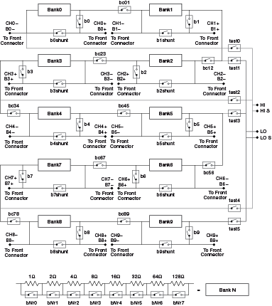
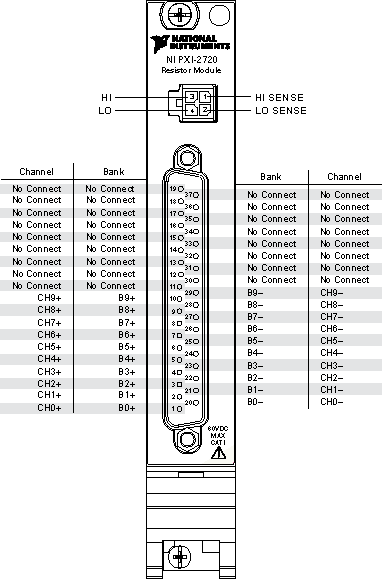

The following figure represents the NI PXI-2720 in the independent topology.

|
Note Bank connect relays allow adjacent banks or channels to connect together internally. For example, you can connect two or more adjacent channels together to create a potentiometer, a voltage divider, or a multi-segment resistor chain. |
When a bank relay is closed, the corresponding resistor is placed in parallel with the low resistance of the relay, which nominally equates to a zero Ω shunt. Closing any of the 8 bank relays in a given bank decreases the resistance of that bank.
For example, the following procedure uses the NI-SWITCH Relay API to short across the largest resistor in bank 0 and join bank 0 and bank 1 in series.
You can perform the same operation using the NI-SWITCH Channel API, as shown below.
Each bank is initially in a high impedance (open) state across the bank terminals. To enable the desired output channel you must first connect the bank relay, bN.
Each bank includes a shunt relay that completely bypasses the bank's string of 8 series relays. Closing the shunt relay bN->bNshunt, for example, b0->b0shunt or low-level kb0shunt, results in a low resistance across the bank, 0 Ω nominally. This allows the NI PXI-2720 module to pass signals with minimal attenuation.
|
Note It is not necessary to close all 8 bank relays and the shunt relay. Configuring multiple banks this way can exceed the power budget of the NI PXI-2720. |
The 4-pin front panel test connector can connect to any adjacent pair of even-odd banks, allowing resistance measurements, or voltage measurements, across those two banks, for example b0 to b1, b2 to b3, b4 to b5. On 16-bit NI 272x modules, this allows channel resistance measurements using a DMM with Offset Compensated Ohms (such as the NI PXI-4070, NI PXI-4071, or NI PXI-4072). To connect a pair of banks to the test leads, close the appropriate test relays using the command testN->testout. For example, to measure the resistance across banks 0 and 1, call test0->testout and test1->testout. For banks 2 and 3, call test1->testout and test2->testout. Refer to the device's hardware diagram for valid test relay connections.
|
Note Closing multiple pairs of test relays introduces low impedance paths between banks. NI recommends disconnecting the 37-pin DSUB connector if these low impedance paths would damage your device under test or cause the current specifications of the NI PXIe-2727 to be exceeded. |
|
Note Each channel on the NI PXI-2720 exhibits an "open" when initialized, reset, and first powered on. The niSwitch Reset and niSwitch Disconnect All Channels VIs or niSwitch_reset and niSwitch_DisconnectAll functions will disconnect all relays, resulting in an open circuit on each channel. |
The following figure identifies the pins for the NI PXI-2720.

|
Note Do not connect to "No Connect" pins. |